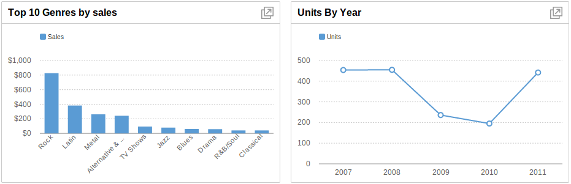
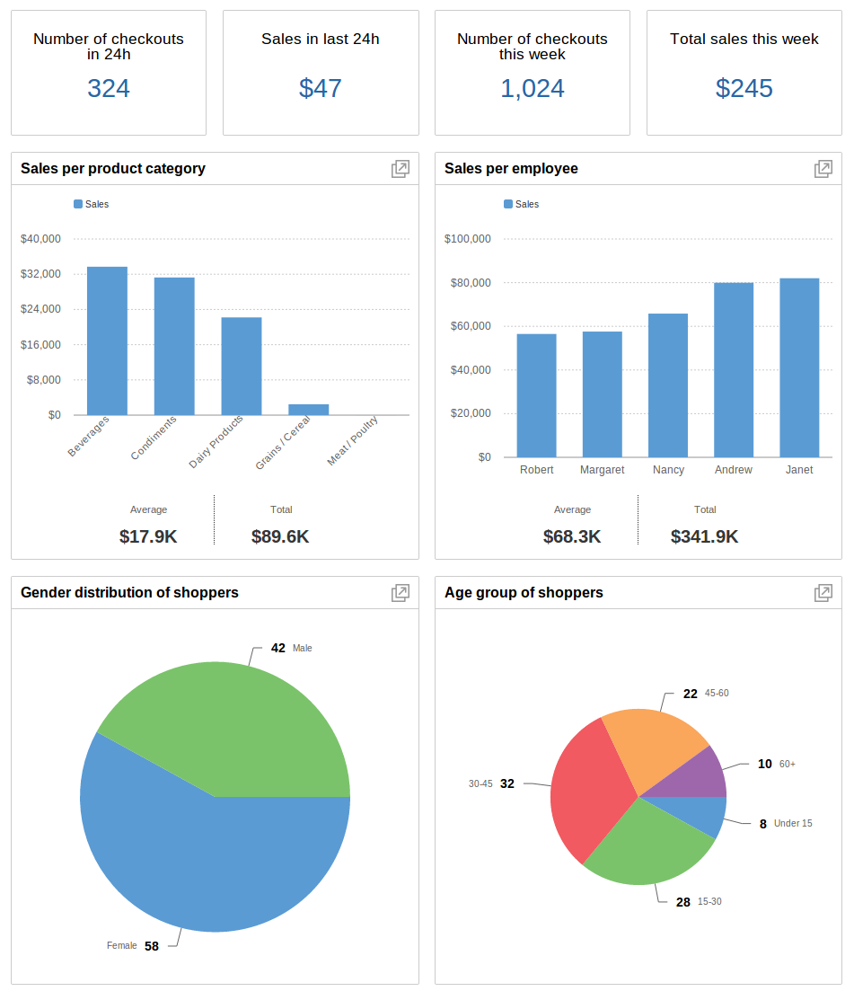
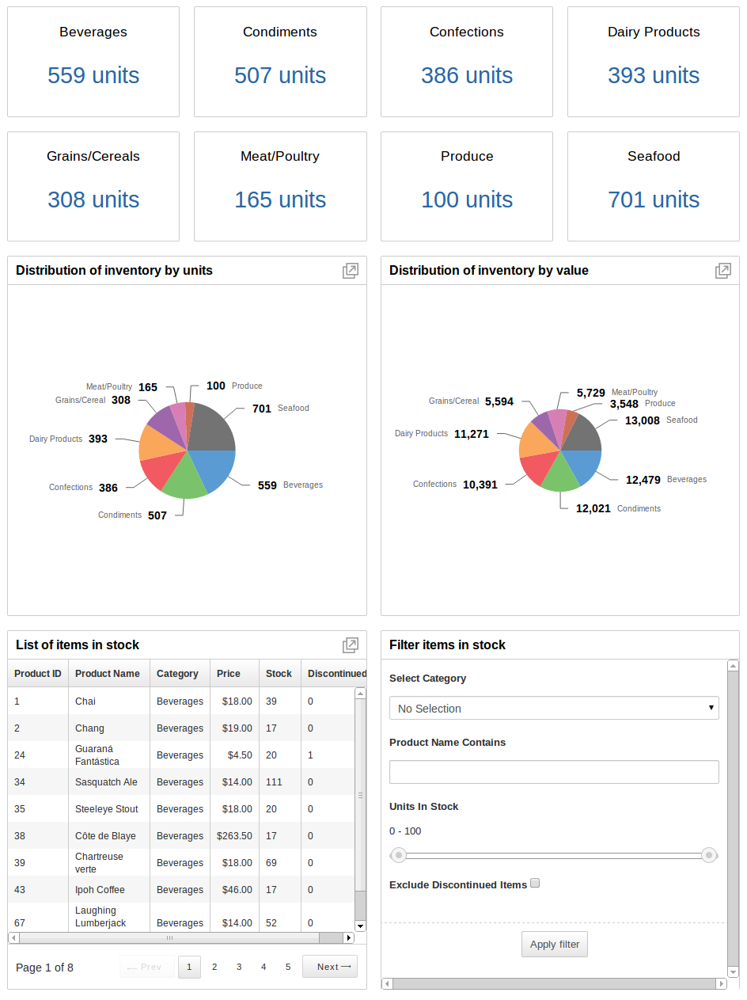

RazorFlow Dashboards Framework
RazorFlow is a framework to build interactive, responsive, cross-device, and beautiful dashboards.It provides an intuitive API to configure parts of the dashboard, and it intelligently processes the data to render the dashboard according to the form-factor and capabilities of a user's device. I was primarily responsible for designing and developing certain charting components, responsive dashboard layouts and multivariate data processing systems.
My Role
I'm one of the developers of RazorFlow which is a product under FusionCharts.Design and Development
Chart Component can be considered as a typical workflow example. A chart component can have a bar chart, multi-series-bar chart, pie chart or a sparkline. I have started out by sketching several designs for the bar chart and sparkline as these two are very closely integrated in practical use. Our team narrowed down on two designs based on ease of comprehension, summarizing degree, responsiveness and familiarity to the user. I have then prototyped these two designs using D3.js and CSS. Weighing out the pros and cons of each design, we have zeroed in on the present design. We have designed it to look as minimal as possible. The colors used are very subtle, polished and enterprise like. Displaying long labels was an interesting problem we faced during development. We had come with our own algorithm to deal with longer labels. Having the visual design ready, I moved onto designing an easy to use API and implementation of the chart component. We have primarily used HTML5, D3.js, CSS and in-house JavaScript libraries to build the charting infrastructure.
Dashboard Examples
Sales Dashboard
Inventory Dashboard
Besides charting components, I was also involved in building responsive dashboard layouts, authentication layer and data processing systems to connect very large JSON, XML, Google Docs and other cloud data-sources with RazorFlow.